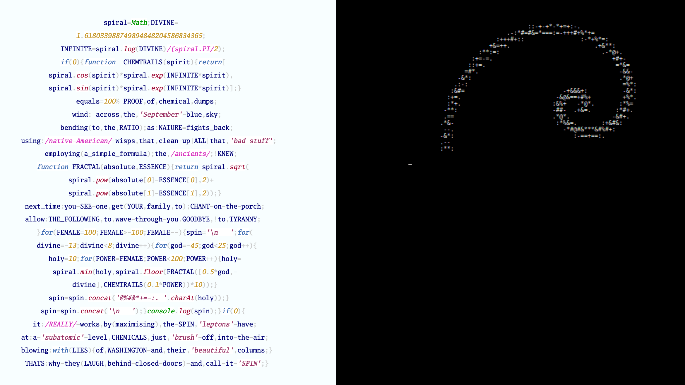
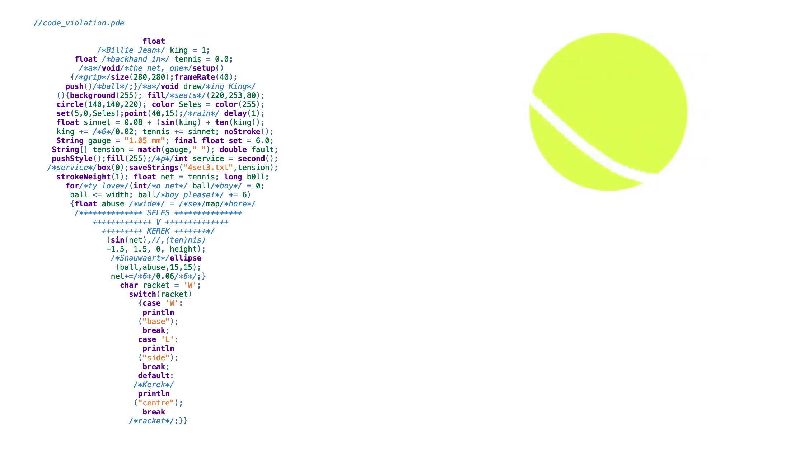
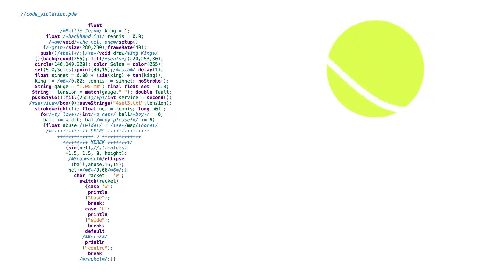
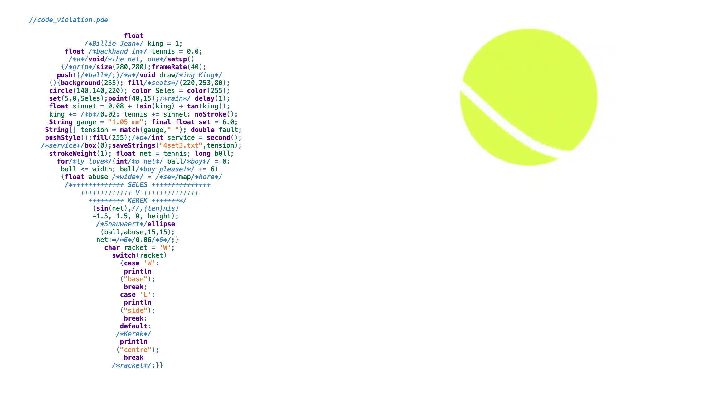
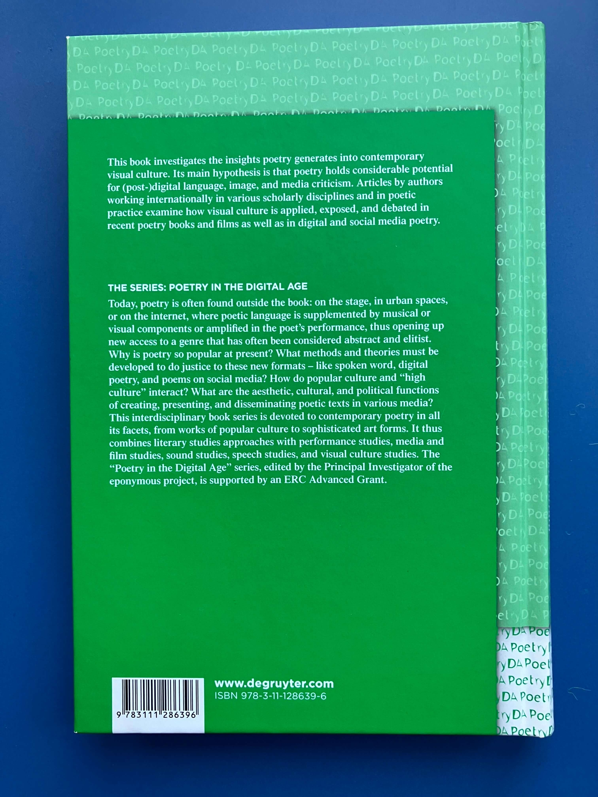
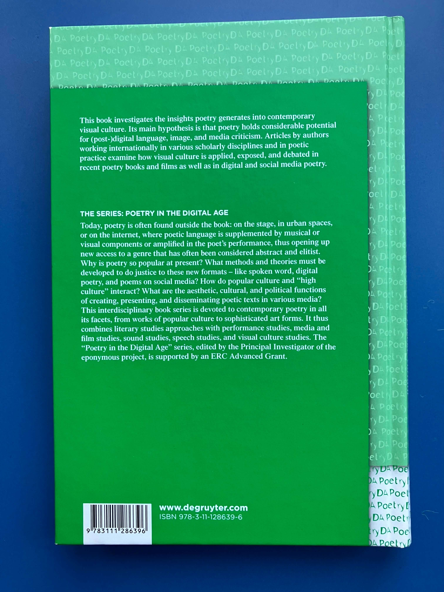

./code --poetry
./code --poetry is a creative coding project published online (code-poetry.com) and as a print book (Broken Sleep Books, 2023). This project is a collaboration between Chris Kerr and Daniel Holden.
This project consists of a series of code poems, each written in the source code of a different programming language. Every poem is also a valid program that produces an ASCII art representation of itself when compiled and run.
Book
The print version of ./code --poetry, published by Broken Sleep Books in May 2023, contains the code poems featured on code-poetry.com as well as ten additional book-exclusive poems, a Linux-style "manual" page with help text for each code poem, and two essays on code poetry.
This book is an expanded edition of an earlier version self-published via Createspace in 2016.

Each code poem appears on the left-hand page, with its corresponding visual output displayed on the right-hand page.


Website (code-poetry.com)
On code-poetry.com, you can navigate between code poems using the buttons at the top of the screen. The code poem is displayed on the left of the screen, while its output is displayed on the right. Unlike the print book, which features static snapshots of the output, the website showcases the animations in motion.

 


Previous publication of ./code --poetry work
Battalion anthology (Sidekick Books)
'iron_lung.bat' first appeared as part of a series of works called 'Barotrauma' in the print anthology Battalion, published by Sidekick Books in 2018. One of Sidekick's editors, Jon Stone, wrote about 'Barotrauma' in his 'Barotrauma' spotlight (December, 2018).
Welcome to the Jungle commissions
In 2019, the media company Welcome to the Jungle commissioned four new code poems, which were later included in ./code --poetry (2023 edition):
Broken Sleep Books launch content
./code --poetry was released by Broken Sleep Books in March 2023.
- Online launch of ./code --poetry (March, 2023) with readings from Daniel and Chris
- Aaron Kent's interview with Daniel and Chris (October, 2023)
Lectures on ./code --poetry by the authors
Chris and Daniel have presented the following lectures and talks on ./code --poetry:
- Code Poetry as Constrained Writing, Chris Kerr (in person), Conference: Digital and Digitized Traces, Norwegian University of Science and Technology, Trondheim, Norway, 21 October 2024
- Sonic Code Poetry, Chris Kerr (in person), Oslo Flermediale 2024, Olso, Norway, 19 October 2024
- Optimizing Code for Performance: Reading ./code --poetry (recording), Chris Kerr (in person) & Daniel Holden (video), Conference: Poetry and Contemporary Visual Culture, University of Hamburg, Germany, 20 May 2022
Academic article by the authors
Chris and Daniel developed their conference presentation at the University of Hamburg (2022) into an academic paper:
- Kerr, Chris and Holden, Daniel. "Optimizing Code for Performance: Reading ./code --poetry". Poetry and Contemporary Visual Culture / Lyrik und zeitgenössische Visuelle Kultur, edited by Magdalena Elisabeth Korecka and Wiebke Vorrath, Berlin, Boston: De Gruyter, 2023, pp. 167-184. https://doi.org/10.1515/9783111299334-009
 

Strauhof Gallery Exhibition
Work from code-poetry.com was exhibited as part of Maschinenpoesie at Museum Strauhof in Zurich, Switzerland, from November 2024 to January 2025. The following three pieces were looped on wall-mounted screens:


Exhibition photos © Zeljko Gataric.
References to ./code --poetry
References to ./code --poetry have appeared in the following media.
Academic citations
./code --poetry has been cited in the following academic articles, conference proceedings, and theses:
- Depaz, Pierre. The Role of Aesthetics in Understanding Source Code. PhD dissertation, Université Sorbonne Nouvelle, 2023. https://source.enframed.net/.
- Drymonitis, Alexandros, “Live Coding Poetry: The narrative of code in a hybrid musical/poetic context,” Organised Sound, vol. 28, no. 2, pp. 241–252, 2023. https://doi.org/10.1017/S1355771823000493
- Drymonitis, A., & Manousakis, M. (2022). Echo and Narcissus: Live Coding and Code Poetry in the Opera. In G. Torre (Ed.), Proceedings of the International Computer Music Conference 2022, ICMC 2022 (pp. 16-21). (International Computer Music Conference, ICMC Proceedings; Vol. 2022-July). International Computer Music Association. https://www.fulcrum.org/epubs/8910jx22c?locale=en#page=28
- Drymonitis, Alexandros. "The Artists Who Say Ni!: Incorporating the Python Programming Language into Creative Coding for the Realisation of Musical Works." PhD thesis, Birmingham City University, Dec. 2021, https://www.open-access.bcu.ac.uk/14314/.
- Polo, Ludovica. (2024). Nuove esplorazioni verbovisive. Forme e applicazioni di scrittura visuale negli artefatti contemporanei [JD]. Ocula, 25(30). https://doi.org/10.57576/ocula2024-9
- Silva, Teófilo Augusto da. "Arte computacional: o que reter, como reter?: o que guardar, como guardar?" PhD thesis, Universidade de Brasília, 2022. https://repositorio.unb.br/jspui/handle/10482/44893?mode=full
- Verano Merino, Mauricio, and Juan Pablo Sáenz. 2023. The Art of Creating Code-Based Artworks. In Extended Abstracts of the 2023 CHI Conference on Human Factors in Computing Systems (CHI EA '23). Association for Computing Machinery, New York, NY, USA, Article 271, 1–7. https://doi.org/10.1145/3544549.3585743
- Vorrath, Wiebke. "Unter der Oberfläche? Programmierte Schriftlichkeit in digitaler Lyrik". Schriftlichkeit: Aktivität, Agentialität und Aktanten der Schrift, edited by Martin Bartelmus and Alexander Nebrig, Bielefeld: transcript Verlag, 2022, pp. 55-68. https://doi.org/10.1515/9783839460924-003
Conference presentations by third-parties
The following conference speakers have kindly referred to ./code --poetry in their presentations:
- On the Aesthetics of Code, Sy Brand, CPPP 2021
- Is code poetry the new avant-garde?, Laura Caccia, TEDxLondon 2018
Online articles
./code --poetry has appeared in the following online articles:
- What is Code Poetry?, Hyperallergic, Daniel Temkin, 21 August 2023
- Ekrits (Japanese), Akihiro Kubota, 7 January 2020
- Code poetry: Poems written in programming languages (English) (German), Pop Web Design, Nađa Božović (English) & Kristina Dosen (German), 2018
- Practising Ada's "Poetical Science", Huffington Post, Kari Kraus, 18 April 2017
- Code poetry challenges the meaning of creativity and visual arts, Software Development Times, Madison Moore, 16 February 2017
- Deus ex-machina: De l’Anthropocentrisme au Transhumanisme (French) | Revue de Paris
Podcast interview
Chris discussed ./code --poetry with Wes Brown in his Broken Heroes Podcast, Episode 2.
Print magazine
./code --poetry was featured in P-Code Magazine (Issue 001), published by HAUS++ in Japan. For photographs of the magazine, see Trans Books archive.
Shoutouts and blog posts
./code --poetry has been mentioned in the following blogs and shoutouts:
- Poetry Takes Over Tech, Marie Dollé, 9 June 2024
- Pixel Envy, Nick Heer, October 31 2022
- Webcurios, 28 October 2022
- E-Poetry and Its Cyber Branches, The Good Men Project, 16 August 2020
- Krzysztof Siejkowski's codepoems.xyz
- Backslash Lit
University syllabuses
./code --poetry has been taught at several universities in the UK and at the European University Cyrpus.